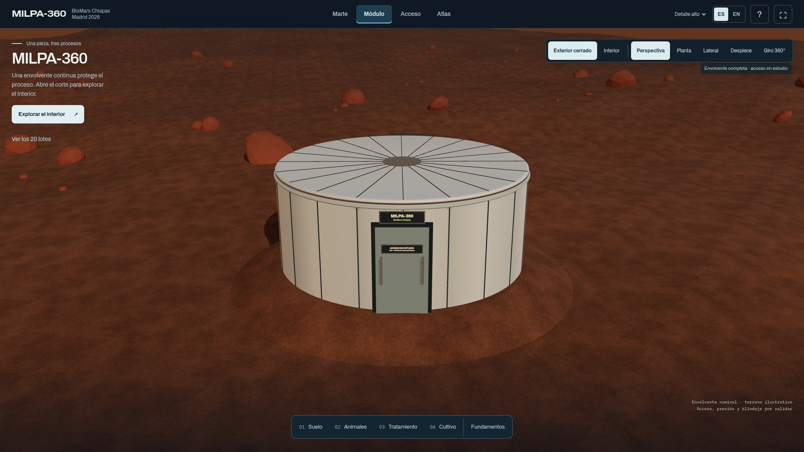
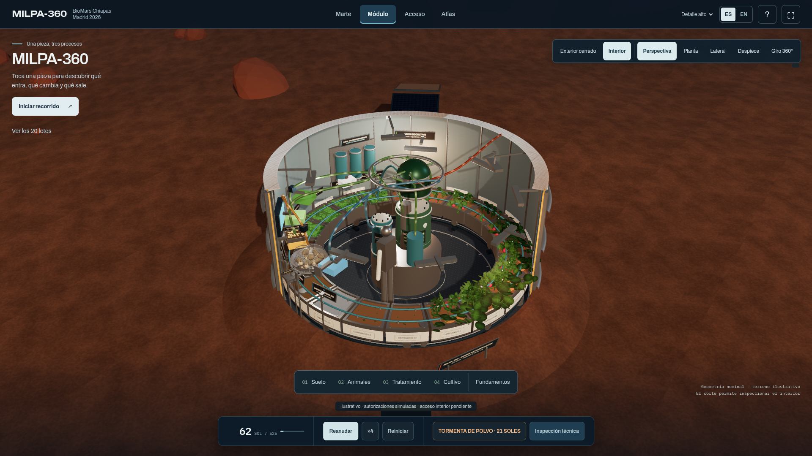
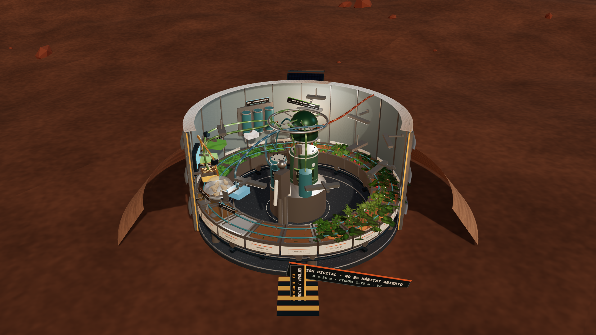
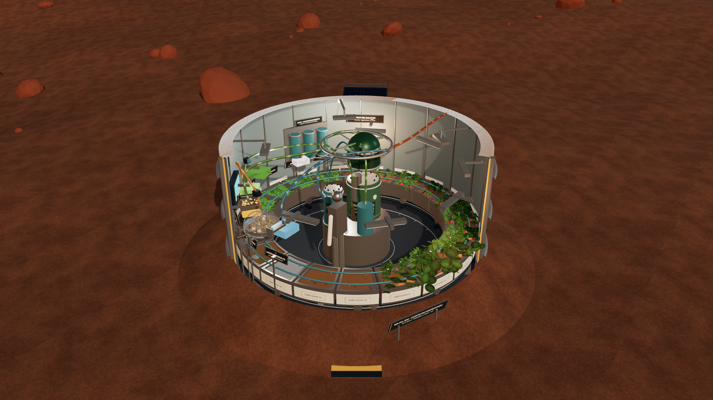
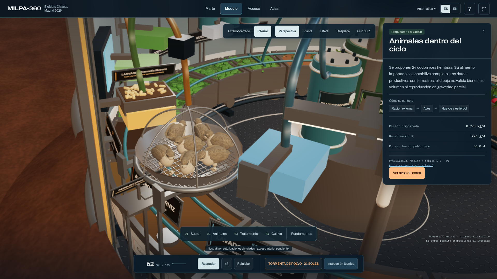
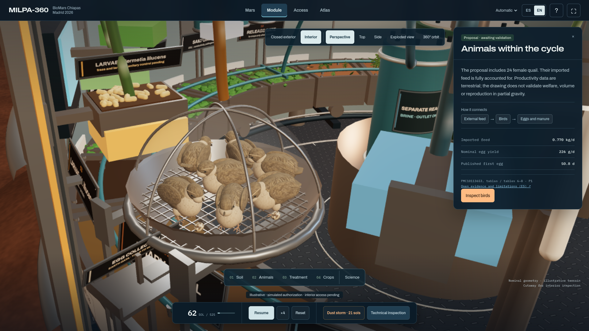
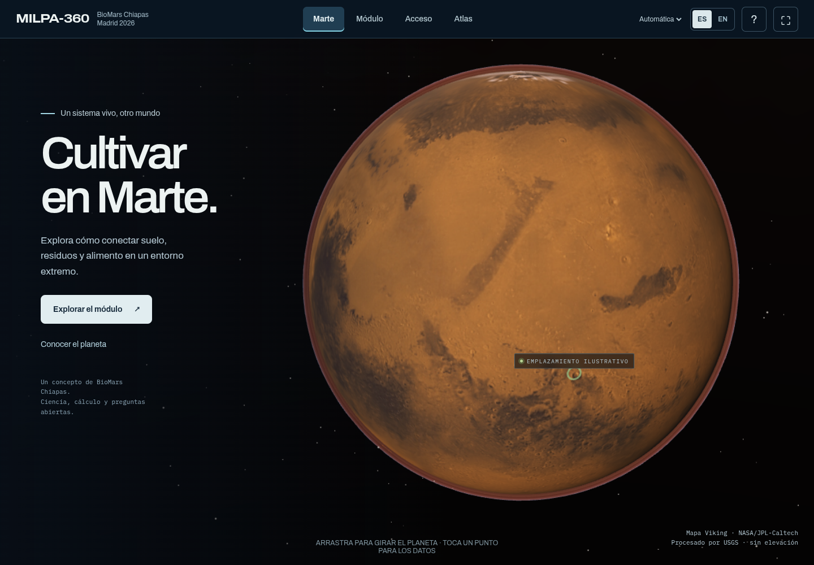
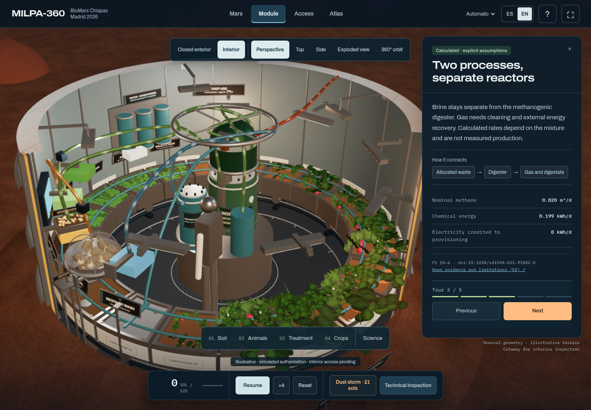
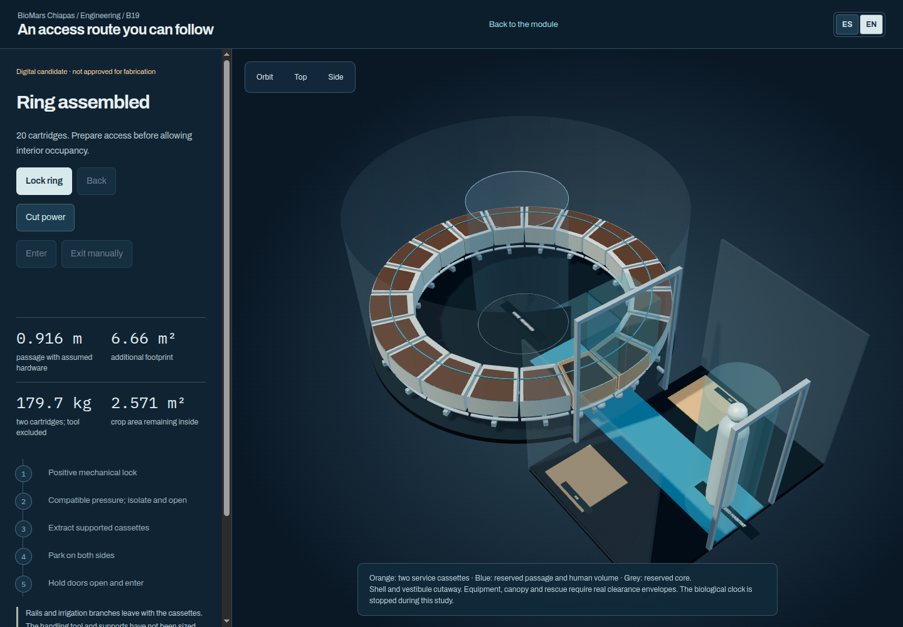
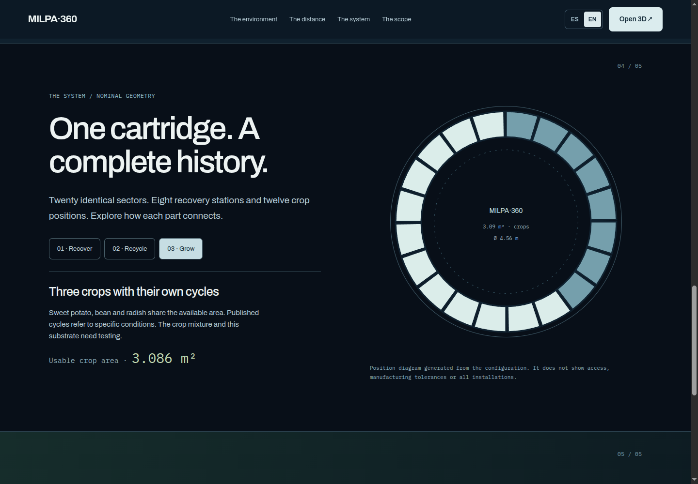

Antes y después · MILPA-360
Envolvente e inspección · V4

Casco completo; acceso y presión pendientes
Corte, procesos y giro de cámara independienteEvolución del módulo

Anterior · V2
Actual · V4Aves y carteles · V4

Detalle del aviario · patas, alas y cuello articulado
Inspección en inglésInterfaz y recorrido

Marte · mapa NASA/JPL-Caltech, sin elevación
Recorrido · explicación por procesoAcceso y atlas

Acceso B19 · candidata digital separada
Atlas · contexto y alcance